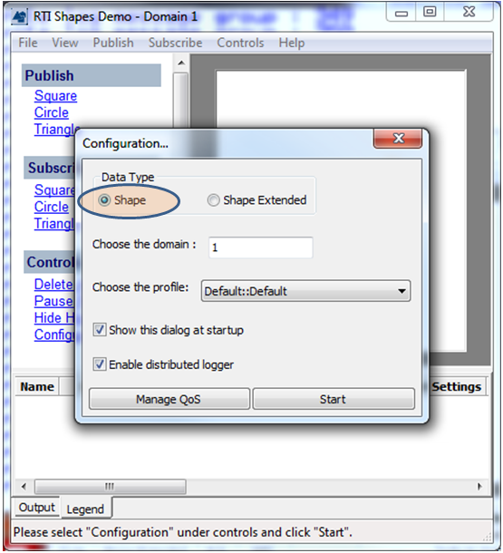
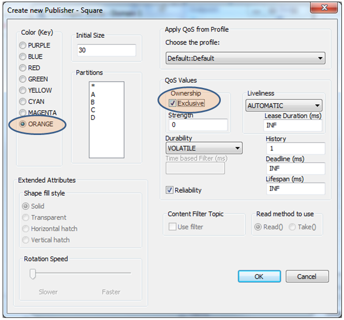
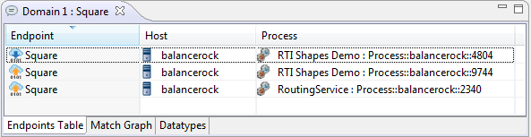
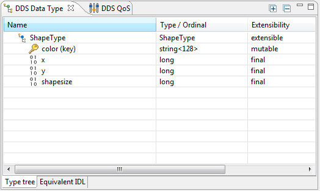
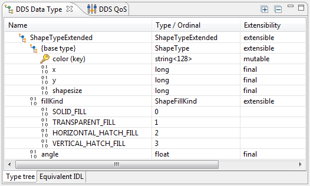
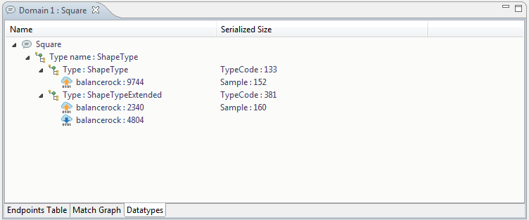
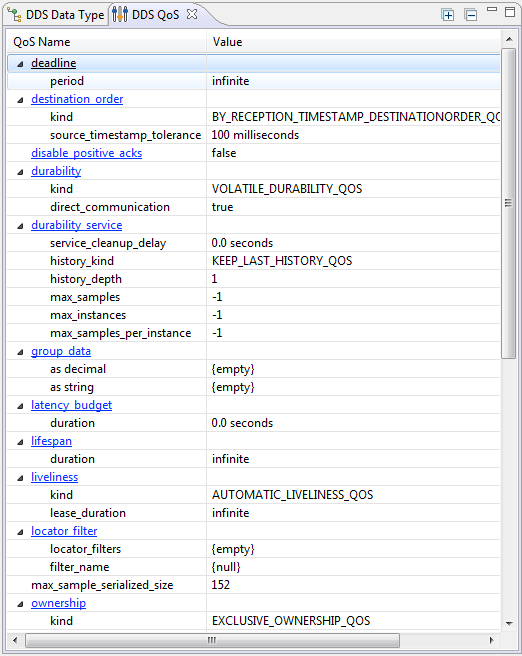
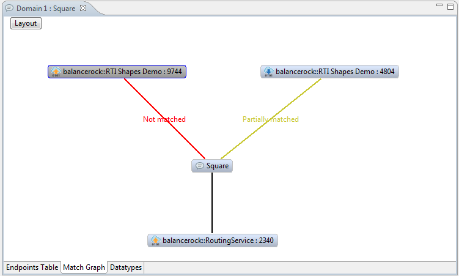
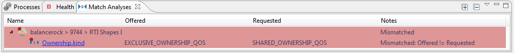
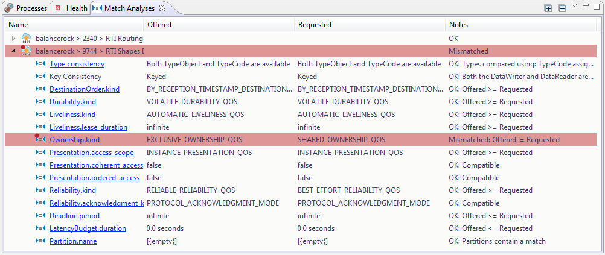

Admin Console provides insight and details
about your distributed system which can be used for debugging. In this step
of the tutorial we will see these views and how they can be used to debug
your system.
The
Topic View
provides three distinct sets of information relating to a single DDS
Topic in the distributed system. To best understand this information,
let's first create a new instances of the Shapes Demo. Follow the
same directions as in Step 3 but this time, choose the "Shape"
Data Type rather than "Shape Extended."

This time, let's create an orange square with exclusive ownership.

From the
DDS Logical
View, select the "Square" Topic under "Domain
1." The Topic View is now displaying the Endpoints Table.

All of the DataWriters and DataReaders associated with this topic can
now be seen in the the Endpoints Table tab. This table shows the host
and process that contains the endpoint. These two facts alone are often
very helpful in understanding what is running where. When you select
rows from this table, you will get detailed information about the data
type, QoS, and match status of the endpoint.
Select the DataWriter associated with the Shapes Demo (use the icon
in the Endpoint column
and the process name from the Process column to find it). Now, you can
see the data type associated with this DataWriter in the
DDS Data Type View.

Select the DataReader associated with the Shapes Demo created earlier.
Notice that the DDS Data Type view changes and now has this content:

This reveals that the system has multiple type definitions for the same
Topic. This is often a critical piece of information, so much so that
another tab in this editor is dedicated to making this information easy
to find. Select the "Datatypes" tab from the bottom right of
the Topic View.

This tab shows which endpoint is associated with each of the two
datatypes currently being used in the system for this Topic. It also
shows the serialized TypeCode and sample size for each of the two
datatypes. This information is important when tuning DDS QoS. Select the
DataWriter listed under the "ShapeType" datatype. Now click on
the
DDS QoS View.

Want to find out more information about a particular QoS? Click on a
hyperlinked row in the QoS Name column and the documentation for that
QoS will be displayed (active internet connection required).
The exclusive ownership setting can be seen right at the bottom of the
DDS QoS View. This setting, however, is in conflict with the
previously-created DataReader. How can this be debugged? Select the
Match Graph tab in the Topic View.

This tab shows that the newly-created DataWriter with exclusive
ownership is not matched to any DataReader associated with this Topic.
This tab can also be used to drive other displays by selecting
endpoints. But why does the Shapes Demo DataReader show that it is
partially matched? Go ahead and select it and then turn your attention
to the
Match
Analyses View.

The Match Analyses view provides a comprehensive view into each match
analysis criterion as it pertains to each potential match for an entity
in the system. In our case, the mismatched ownership QoS is obvious.
But how can we see all of the criteria being checked in the match
analysis? Go to the view's menu (
in the upper-right corner of the
view). Select the menu item "Show only mismatches" to deselect
it. Now, each criterion is visible whether it is a match or not.

Want more information about how a match is determined for a particular
row? Click on a hyperlinked entry in the Name column and the associated
documentation will be displayed (active internet connection required).